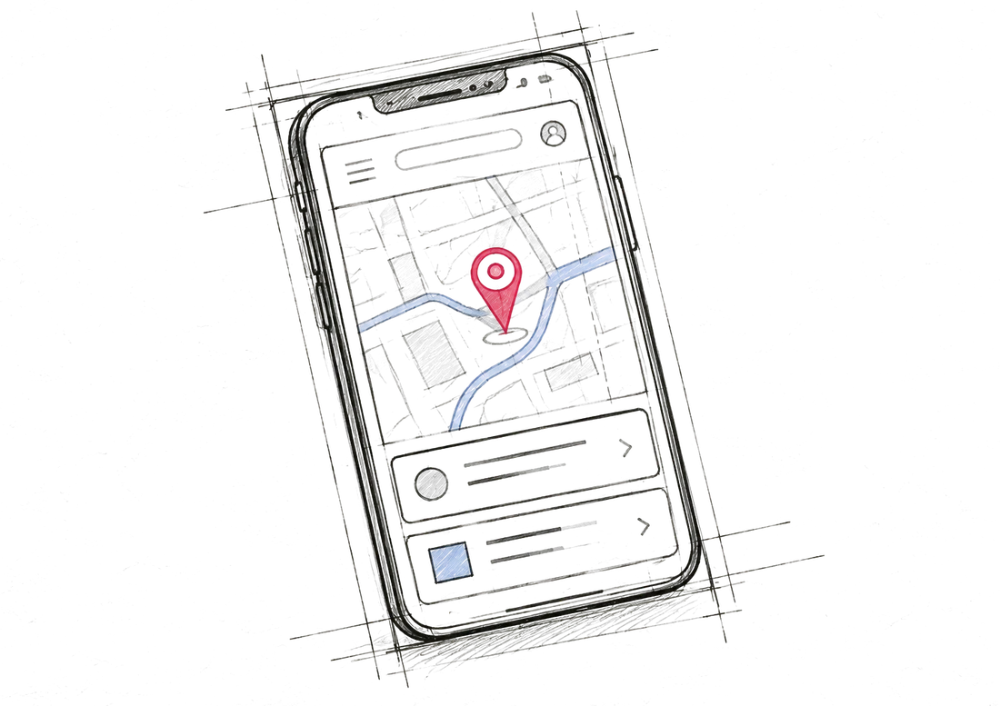
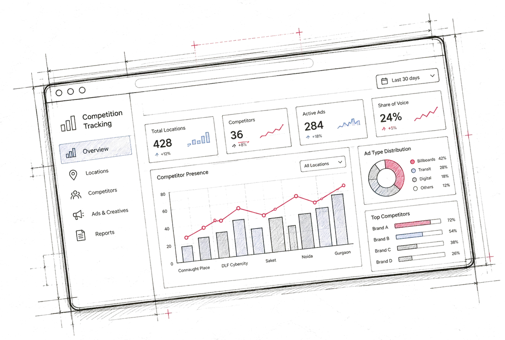
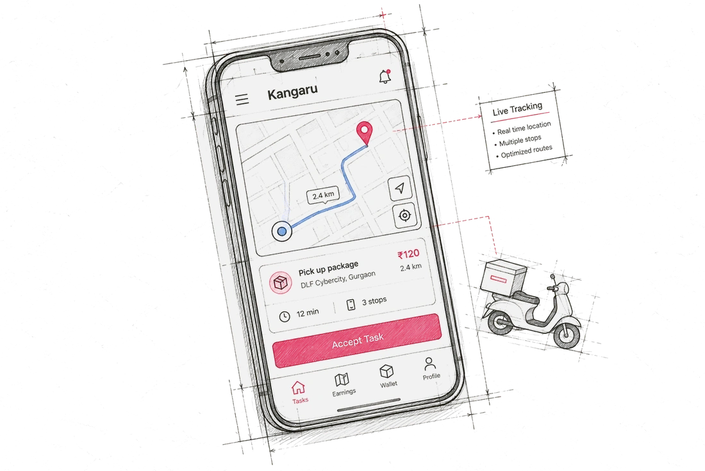
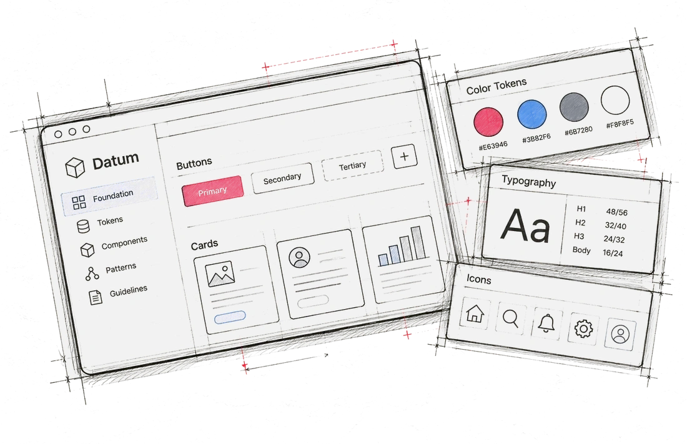

Systems over screens
I fix the source, not the symptom. One design language beats ten polished screens.
Product Designer
Helping brands verify outdoor ads through a network of riders.

Helping brands track competitor outdoor ads across locations.

Reducing vehicle costs for last-mile delivery riders.

A dark-first design system built from scratch, documented for scale.

I turn complex product problems into simple, usable experiences.
Product designer with 3.5+ years across AdTech, logistics and health-tech. I started out as an engineer, so I think about how things get built before I draw how they look. I work across research, flows, interaction design, prototyping and design systems—and I care most about making products useful for the people who use them.
Explore each layer to see how I evaluate a product.
I fix the source, not the symptom. One design language beats ten polished screens.
Opinions are cheap, tests aren’t. LocEarn V1 was rebuilt because riders said so.
The deposit, the fee, the wallet: business model is a design problem.
Design isn’t done at handoff. I stay for what happens in the field.
“Jatin brought a strong sense of ownership to his role as a designer at Kangaru. He could take an idea from an early requirement through to a structured design, often working independently in a fast-moving environment. His strength lies in bringing clarity to complex workflows and creating consistent, scalable design solutions without losing sight of what the product needs.
Shashi PathakFounder, Kangaru
“Jatin is someone who doesn’t need every step spelled out for him. He takes ownership of his work, thinks through the reasoning behind his design decisions, and pays attention to the details that are easy to overlook. What I appreciate most is that he balances good design with practical constraints instead of treating them as separate things.
JayantTeam Lead, LOCAD
Product renders and two ads I make in my spare time. It is where the engineer in me still builds things.
…and build something people like.
Paused
The clock is stopped and the pieces are hidden.
Drag a piece onto the board and it snaps when close. Keyboard: press Enter on a piece to pick it up, use the arrow keys to move it, or press Tab to reach a board square and Enter to place it there. Escape drops it.
Pick how you'd like to reach me.